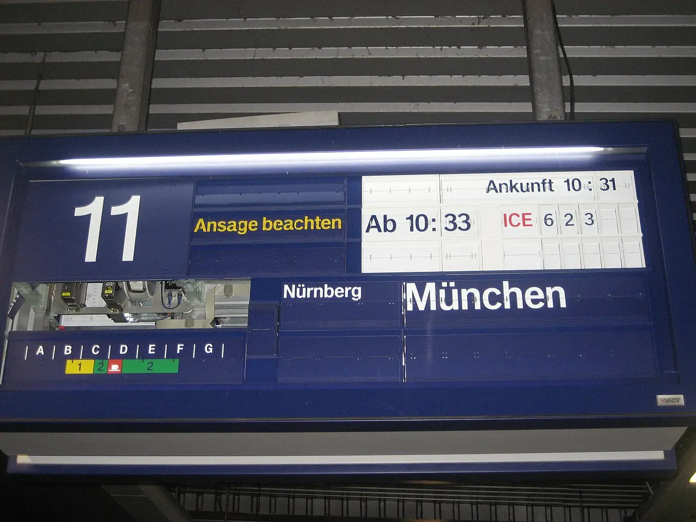
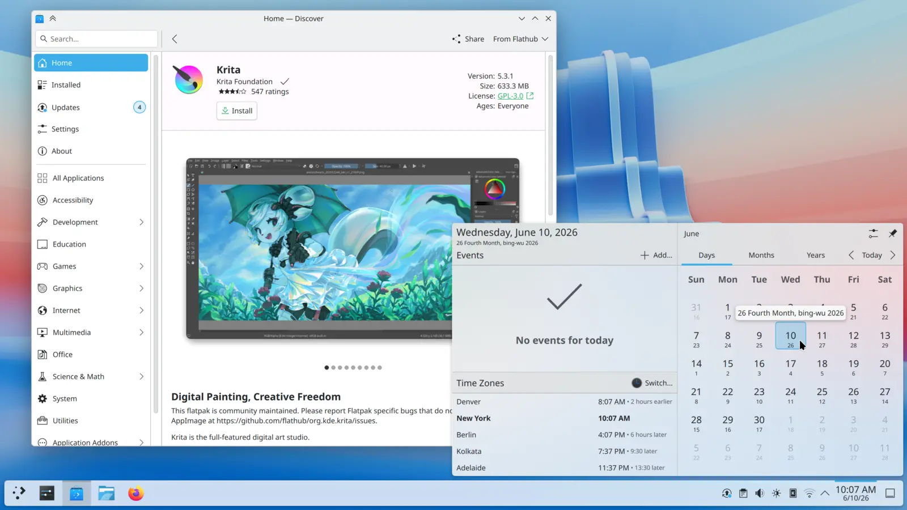
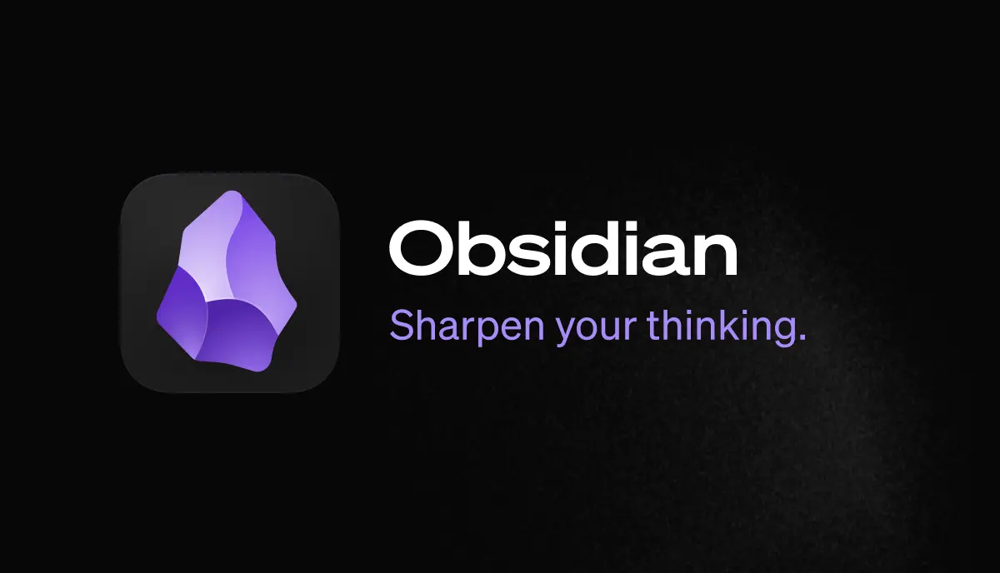
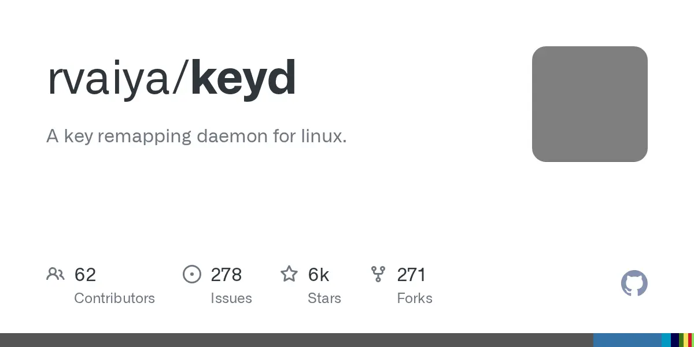
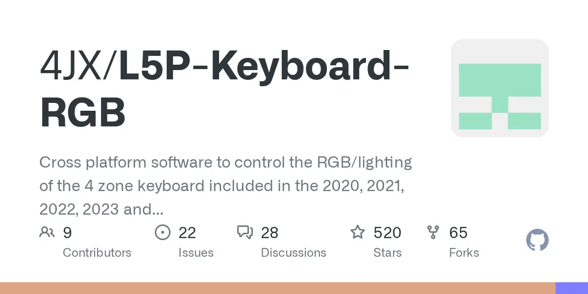
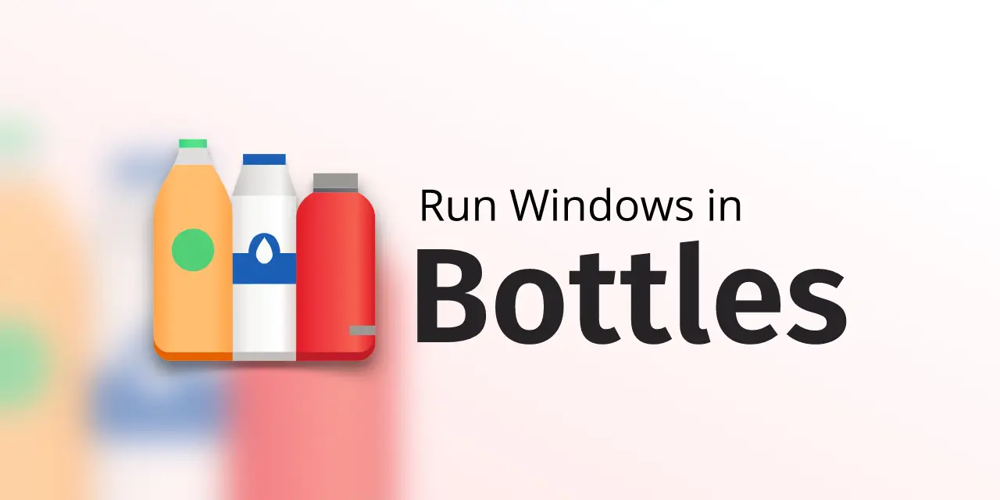
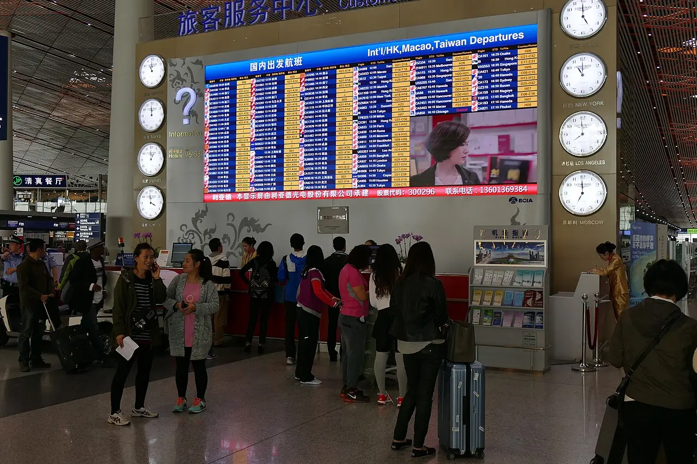

Departures / all services
The decision is the desktop environment, not the applications.
Seven angles over the programs actually installed on this Legion. Two of them reached KDE Plasma independently, for unrelated reasons. Every authoring tool has a Linux answer; the administration tools don't — and the expected blockers, the corporate VPNs and the anti-cheat wall, aren't blockers at all.
Split-flap board, Köln Messe/Deutz · Wikimedia Commons
Terminal L · what you arrive into
The destination is a shell, a launcher and a notebook — not a list of installers.



The board · seven services
✓ on time · ⚠ delayed, boards with seats missing · ◇ standby


xdg-desktop-portal and wlroots-based compositors implement it unevenly [2], so pick Plasma or GNOME, not a wlroots compositor, if input automation matters.

client.ovpn [6]. Fan curves and power modes are in mainline as of Linux 6.17 [44]. The losses are small and cosmetic — and the one thing to clear with IT is a policy question, not a technical one.
⚠ Ground stop · one hardware check gates every service on this board
On a Legion, every external output is wired to the dGPU — and hybrid-mode Wayland with a dGPU-attached external display has a long tail of blank-screen reports.
Live-boot Plasma 6.7 with the monitor attached and test all three BIOS graphics modes before committing [14]. Note that the fallback most people reach for is closed off here: muxless Optimus passthrough caps a guest at 640×480, and NVIDIA's driver refuses to form Optimus against a virtual iGPU [15] — so a Windows VM with real GPU access is not the safety net.

✗ Cancelled · no onward service
Wine cannot save this class. The hardest losses aren't applications — they're shell integration and kernel drivers. A Wine prefix has no host Windows desktop to hook and no kernel-mode driver stack, so there is no hatch at all: native replacement, or drop. There is no third option.
Gate · boarding order
Three of these are ordered, not optional, and they happen before the wipe.
Ordered · while Windows still boots
onenote-md-exporter ⭐ 1.6k drives the OneNote desktop app via COM — it cannot reach the notebooks from Linux, and the Obsidian importer refuses work accounts [11]. Destination: Obsidian.
.ovpn
VPN → Mobile VPN → Download Profile on the Firebox. That file is the Linux client — stock OpenVPN imports it, two-factor challenge-response included [6].
The only way the speaker EQ survives. Rebuilt afterwards as an EasyEffects ⭐ 9.9k chain; unrecoverable once the partition is gone.
Pre-flight · before you book anything
All three BIOS graphics modes. This is the check that decides whether the rest of the board is bookable at all [14].
Posture Check runs client-side and denies private access on failure [5]. Confirm the AV and disk-encryption checks aren't Windows-only.
Landing on an EWS-only client buys three months. Evolution 3.60's native Graph account type is the destination [12].
Last departure times
An external clock is running. Two of these have already left.
Manifest · the fifteen sources behind this board
285 more sit under the seven services.
Final call · gate unknown
If the honest plan keeps a Windows partition for SSMS's Agent tooling, the WinForms designers and the firmware utilities — is that a migration, or a slow dual-boot that quietly becomes permanent?
Every authoring tool on this board has a Linux answer. Every administration tool that doesn't is a reason to keep the partition — and every reason to keep the partition is a reason never to finish the trip.